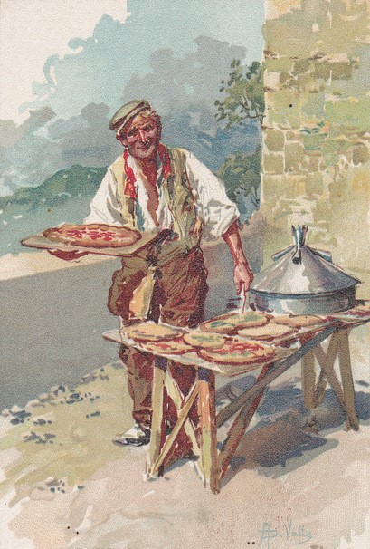
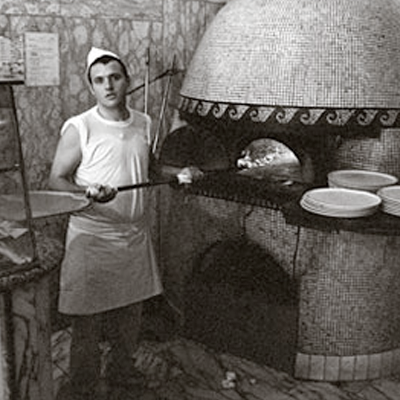

Ce plat italien remonterait à l'Antiquité tardive. Le mot « pizza » serait apparu en 997. Son origine est
controversée : pour certains, le terme vient de l'allemand bizoo qui veut dire « morceau de pain », et pour
d'autres, du grec pitta qui signifie « fouace, galette ».
Cette pâte plate ressemble, en effet, à de nombreux pains que l'on trouve encore aujourd'hui à travers les
différents pays du bassin méditerranéen. Avec le temps et suivant les régions, ce « pain » s'est vu
accompagné
d'ingrédients. Il n'existe donc pas véritablement de ville d'origine de la pizza, mais c'est en Italie que
celle-ci s'est développée au Moyen Âge.
Avec les premiers comptoirs et les échanges entre pays, la tomate et le buffle (dont le lait sert à
fabriquer la
mozzarella) arrivent en Italie, plus précisément à Naples. Les Napolitains sont les premiers à recouvrir
leur
pain de tomates. Au départ, ce plat simple est vendu dans les rues de Naples et les pizzerias où ce pain,
cuit
dans un four à bois, est fabriqué, comme le serait un jambon beurre dans une boulangerie.
C'est en 1780 que la première pizza d'Italie moderne voit le jour, la pizza Margherita (pain, tomates,
fromage),
faite par Raffaele Esposito en l'honneur de la reine Margherite qui appréciait beaucoup ses pizzas. Ce plat
jusqu'alors mangé dans la rue acquiert alors ses lettres de noblesse, et n'a cessé depuis de se diversifier.
